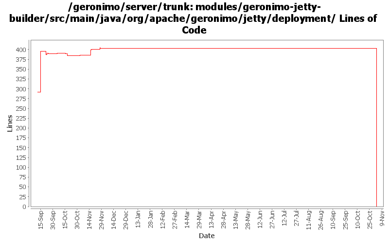

[root]/modules/geronimo-jetty-builder/src/main/java/org/apache/geronimo/jetty/deployment

| Author | Changes | Lines of Code | Lines per Change |
|---|---|---|---|
| Totals | 16 (100.0%) | 512 (100.0%) | 32.0 |
| gdamour | 2 (12.5%) | 401 (78.3%) | 200.5 |
| djencks | 10 (62.5%) | 89 (17.4%) | 8.9 |
| vamsic007 | 1 (6.3%) | 16 (3.1%) | 16.0 |
| jlaskowski | 1 (6.3%) | 6 (1.2%) | 6.0 |
| prasad | 1 (6.3%) | 0 (0.0%) | 0.0 |
| kevan | 1 (6.3%) | 0 (0.0%) | 0.0 |
GERONIMO-3565. Modules distributed amongst framework/modules and plugins
0 lines of code changed in 1 file:
GERONIMO-2599 remove bogus printStackTrace call
0 lines of code changed in 1 file:
GERONIMO-2597 make web service builder optional and allow multiple builders
37 lines of code changed in 1 file:
GERONIMO-2537 Update the src headers in server/trunk/modules to be compliant with the new ASF src header and copyright policy (http://www.apache.org/legal/src-headers.html). I also did some cleanup of the src headers and tried to make them all a consistent format
0 lines of code changed in 1 file:
GERONIMO-2484 NamespaceDrivenBuilders should register QNameSets
3 lines of code changed in 1 file:
GERONIMO-2293 Can't deploy exploded WAR with plan with no environment
16 lines of code changed in 1 file:
Partial fix for GERONIMO-2537 All Geronimo source files must be brought in line with the new ASF source header and copyright notice policy
The modules directory is supposed to be migrated. There're some issues with some files, but they'll be handled manually
6 lines of code changed in 1 file:
GERONIMO-2499, OPENEJB-280. Generalize NamingBuilder slightly, use new corba runtime and deploy time configs. I don't think all the builders are fully wired up yet
8 lines of code changed in 1 file:
GERONIMO-2492 first steps, make the WebServiceBuilder a little more flexible
29 lines of code changed in 1 file:
GERONIMO-2469 - Allow sharing of a single WADI group communication instance between multiple Web-app
Enable WADI ServiceSpace. Also, session timeout is also cascaded to WADISessionManager.
5 lines of code changed in 1 file:
GERONIMO-2414 move the web conversions to AbstractWebModuleBuilder
1 lines of code changed in 1 file:
GERONIMO-2427. Make ref builders accept either j2ee 1.4 or jee5 deployment descriptor xml
6 lines of code changed in 1 file:
GERONIMO-2291 port web service builder changes from 1.1 branch: ws builder gets to determine if there is something to deploy
5 lines of code changed in 1 file:
GERONIMO-2163 - WADI Integration for Jetty
396 lines of code changed in 1 file:
GERONIMO-2383 Refactor naming builder to a set of registered builders
0 lines of code changed in 2 files: